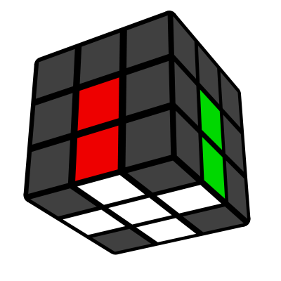
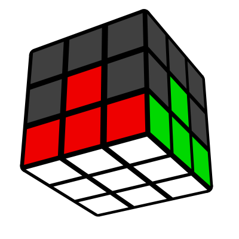
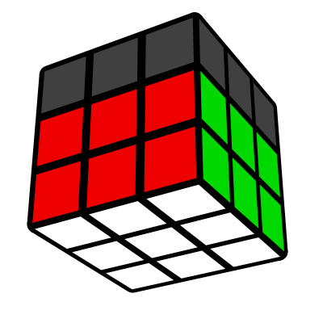
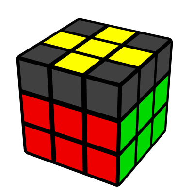
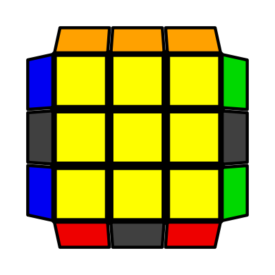
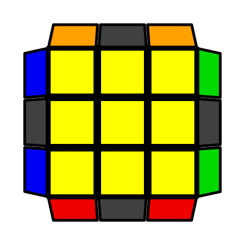

În stratul U, cu albul îndreptat în sus.
În acest caz trebuie adusă deasupra locului unde trebuie să ajungă, rotind stratul U. Se poate rezolva de exemplu prin:

În acest caz trebuie adusă deasupra, în dreapta locului unde trebuie să ajungă. Se poate rezolva de exemplu prin:

Acum rotim cubul în mână, în plan orizontal, şi alegem următoarea culoare pentru faţa F. De exemplu verde. Vom rezolva muchia alb/verde și vom repeta aceeaşi procedură ca mai sus și pentru ea. La fel şi pentru restul muchiilor ce conţin alb astfel încât la final să aduceți cubul în această stare:
Găsiţi în stratul de sus un colţ ce conţine culoarea alb. Uitaţi-vă şi la celelalte culori pe care le mai are colţul. Să zicem că am gasit colţul alb/roşu/verde. Acest colț va trebui să intre între muchia alb-roșu și alb-verde. Rotiţi stratul de sus până când colţul ajunge deasupra locului unde va trebui să ajungă, mai exact, pe stratul de sus între centrul roşu şi cel verde. Sunt trei cazuri posibile:
Culoarea albă de pe colț se află în dreapta:

Culoarea albă de pe colț se află în faţă:

Culoarea albă de pe colț se află în sus:

La fel ca la primul pas unde ați rezolvat muchiile (crucea), aici aplicaţi acest pas pentru toate cele 4 colţuri astfel încât la final să aduceți cubul în această stare:
Muchia se află sus, în stânga locului unde trebuie să intre.

Muchia se află sus, în dreapta locului unde trebuie să intre.

Mai departe procedați la fel și pentru celelalte muchii, iar la finalul pasului cubul ar trebui să arate așa:
După ce am depistat în ce caz suntem (linie sau L), învârtim stratul U până poziționăm “linia” sau “L-ul” ca în figurile de mai jos, apoi aplicăm algoritmul corespunzător.
Linia:

L-ul

Mai poate apărea situația când avem un singur punct, adică doar centrul galben și nici o muchie nu este orientată. În această situație aplicăm oricare dintre algoritmii de sus, după care ne vom regăsi într-unul dintre primele 2 cazuri prezentate (linie sau L). La finalul pasului cubul ar trebui să arate așa:
Acum va trebui să aducem toate cele 4 colțuri cu galben în sus. O piesă care are în sus culoarea galbenă este deja orientată și este un caz fericit. Putem avea de orientat 2, 3 sau toate cele 4 colțuri. Niciodată nu se poate să avem 3 colțuri orientate (cu galben în sus) și unul singur de rezolvat. Cum trebuie făcut:
Rotiţi stratul de sus, astfel încât colțul care urmează să fie orientat să se afle în poziţia R-F-U (dreapta față). Există două stări posibile: faţa galbenă a colţului să fie îndreptată:
În față:

În dreapta:

Odată ce aţi facut acest lucru pentru toate colţurile din stratul de sus, U, cubul va reveni la forma cu stratul de jos rezolvat. Aşa ar trebui să arate cubul după acest pas:

Acum, toată fața de sus este galbenă și va trebui doar să mai mutăm colțurile între ele și muchiile. Vom începe cu colțurile. Această etapă se numește permutare. Dacă toate colțurile ar fi rezolvate (orientate dar și permutate corect), atunci pe fiecare față am avea două colțuri de aceeași culoare, ca în figura de lângă. Aici va trebui să ajungem noi în urma acestui pas.
Pasul presupune mutarea dintr-un loc într-altul al colţurilor din stratul de sus. De cele mai multe ori vom întâlni cazul când pe o singură latură a stratului U avem două colțuri de aceeași culoare, iar pe celelalte nu.
În caz că nu am dat peste situația fericită ca tot cubul să se fi rezolvat deja, va mai trebui să permutăm și muchiile între ele. Voi explica și acest pas cu un număr minim de algoritmi. De fapt, doar unul singur. Astfel, vom putea avea 3 cazuri diferite, dar pe toate le vom rezolva cu aceeași formulă.
Atunci când avem o latură complet formată și doar 3 muchii mai trebuie corectate, vom poziționa această latură în spate (nu cu fața spre noi). Din această poziție se va aplică algoritmul mereu. În exemplul de mai jos latura formată este portocaliu, însă poate fi orice altă culoare.
Cazul 1:
Cazul 2:
Pentru Cazul 1, dacă nu s-a rezolvat deja cubul după prima aplicare, mai aplicăm același algoritm încă o dată. Uneori va fi nevoie să fie aplicat de 2 ori.
Pentru Cazul 2, când nu avem nici o latură rezolvată și toate cele 4 muchii trebuie corectate, aplicăm algoritmul o dată, din orice poziție. Pe urmă, una dintre laturi se va rezolva, o vom aduce în spate și ne vom regăsi în primul caz.